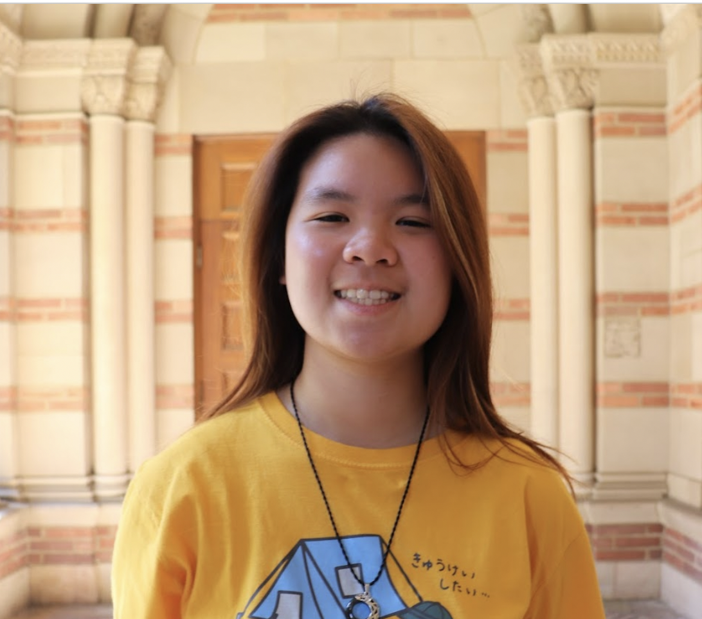

About me!
Hello everyone! My name is Nellie Nguyen, and I'm a rising sophomore with a major in Neuroscience. As a critical digital map maker, I aim to amplify and empower communities and voices that are not always represented in typical maps. I hope to identify gaps in other existing maps in order to fill them and create my own maps to offer new perspectives.
My future goals!
I'm hoping to apply to MD/PhD programs after undergrad in order to work as a neurologist in a clinical setting while conducting research in developing methods to detect and treat neurological disorders. In the healthcare field, I want to have a focus on serving patients of underrepresented communities, specifically those who struggle with language barriers when receiving medical treatment. I hope to mitigate the issues they face when prioritizing their health through not only improving my own Vietnamese fluency, but also learning fundamental phrases in other languages like Spanish, Arabic, Tagalog, etc. as they relate to medicine.
Some facts about me!
- I love getting sweet treats (specifically sweet drinks)! I enjoy trying new cafes or boba shops with friends, and my go to orders are usually matcha lattes (or anything matcha flavored) and jasmine tea w/ sea salt foam/cheese foam.
- Some of my favorite dishes come from Thai, Japanese, Korean, and Vietnamese cuisines. I really enjoy foods with umami flavors, including seafood, seaweed, and many types of broths!
- The music I enjoy listening to consists of Kpop, Pop, Instrumental/Classical, and sometimes EDM!
"Places I have visited!"
Here is what I look like :0
I'm wearing a Gudetama shirt LOL
